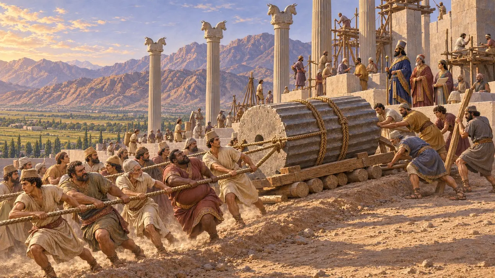
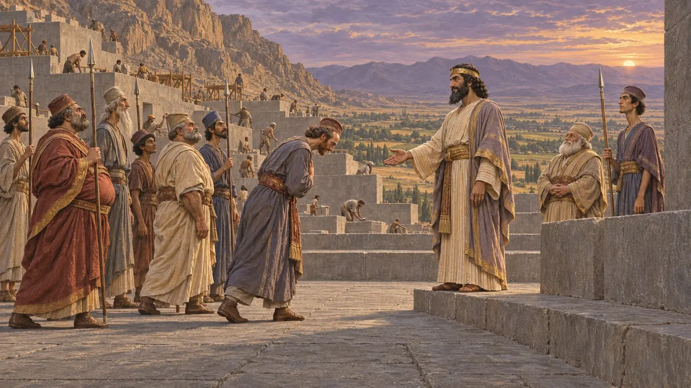
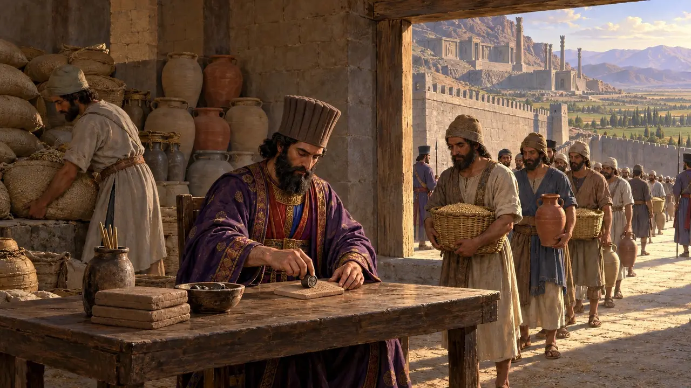
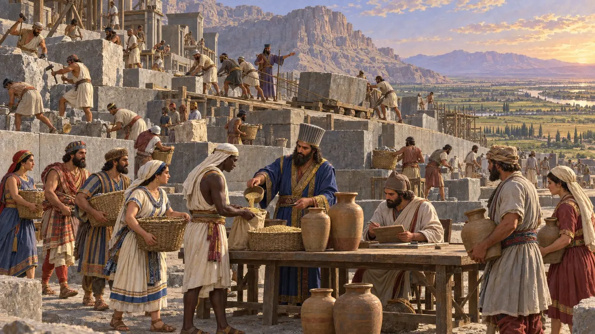
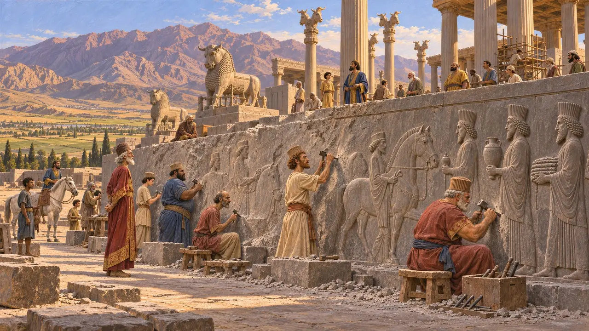
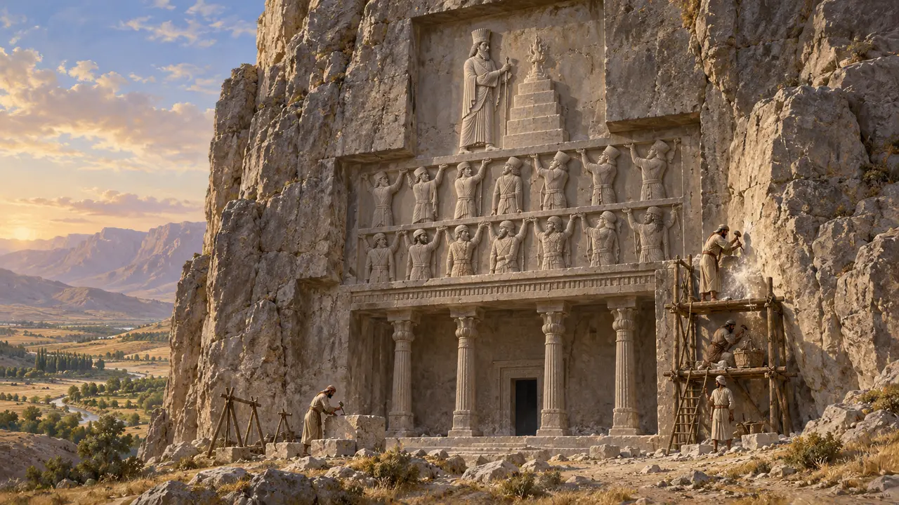
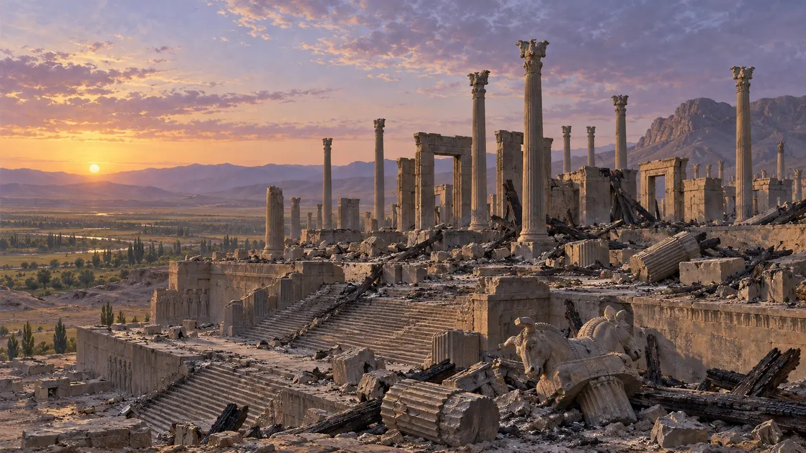

Уровень 4: Терраса · Парса · 521–509 гг. до н. э.
Терраса
Парса, которую греки называли Персеполем, возвышается на своей террасе.
Энциклопедия › История
Когда сама Персида восстала за второго лже-Бардию, полководцы Дария подавили мятеж. Затем он заложил церемониальный город у подножия горы на равнине Мервдешт. Его камни показывают, каким Царь хотел предстать перед миром; его глиняные таблички — как держава на деле кормила своих работников.
- 521 г. до н. э. Падение Вахьяздаты
- 518 BCE Начало строительства террасы
- 509 BCE Первые таблички с пайками
- 486 BCE Погребение Дария
- 330 BCE Александр сжигает город

Второй Бардия
Свидетельства эпохиВахьяздата из Персиды тоже назвал себя Бардией, сыном Кира, и персы на родине пошли за ним. Полководец Дария Артавардия дважды разбил его, и самозванец был посажен на кол. Войско, которое он послал на восток, было разгромлено в Арахосии.
В игре: Персы Вахьяздаты сражаются за такими же плетёными щитами, что и воины Царя.
Behistun inscription sections 40-48
Терраса
Свидетельства эпохиТерраса, частью высеченная в скале, частью насыпная, имеет размеры около 450 г. до н. э. на 300 метров. Её огромные блоки уложены без раствора и скреплены металлическими скобами. Надпись Дария на южной стене просит Ахурамазду защитить страну от врага, от голода и от Лжи.
В игре: Терраса — великая постройка этого уровня.
Persepolis inscriptions DPd, DPe; E. Schmidt, Persepolis I (1953)

Ячмень и вино, а не монеты
Свидетельства эпохиВ 1933 году археологи обнаружили в крепостной стене тысячи глиняных табличек, датированных 509–493 гг. до н. э. и написанных преимущественно на эламском языке. В них записаны месячные пайки ячменя, вина, пива и овец для работников, чиновников и путников. Матери после родов получали дополнительный паёк.
В игре: Rations, not wages: barley and wine from storage pay most of the wage, and meat in the granaries a little more. A brewery makes the beer, kept with the wine.
Persepolis Fortification tablets; R. Hallock (1969)

Работники со всех концов державы
Свидетельства эпохиТаблички называют работников курташ. Среди них — лидийцы, ионийцы, египтяне, вавилоняне и бактрийцы, мужчины и женщины, мастера и чернорабочие, получавшие плату от казны. Греческие рассказы о толпах рабов, строивших персидские дворцы, не согласуются с этими записями.
Persepolis Fortification and Treasury tablets; M. Brosius, Women in Ancient Persia (1996)

Шествие народов
Свидетельства эпохиНа лестницах Ападаны двадцать три посольства несут дары: коней, ткани, золото и животных. Никто не изображён в цепях или в бою. Часто говорят, что здесь показан праздник Нового года, но ни один древний текст об этом не сообщает.
В игре: When the Apadana is finished, delegations walk your roads to it with their gifts, the peoples the trade panel paints bringing tribute. That they come again each spring is a dramatization.
Apadana reliefs; Briant (2002) chapter 5

Гробница Царя
Свидетельства эпохиДарий был погребён в 486 году до н. э. в крестообразной гробнице, высеченной в скале Накше-Рустам. Её надпись перечисляет его земли, а второй текст рядом гласит, что он друг правому и не друг неправому.
Inscription DNb (H. C. Tolman, 1908)

Read next: the topics of Терраса
Битвы и события
Здания
Воины и корабли
Жители
Кир Великий · Бардия, или Гаумата · Дарий Великий · Вахьяздата · Ксеркс · Артавардия
Народы
Персы · Эламиты · Вавилоняне
Должности
Места
Персеполь (Парса) · Накше-Рустам · Афины · Персида · Арахосия
Животный мир и погода
Газель · Онагр · Дикая коза · Белый аист · Заяц · Обыкновенный шакал · Лев · Уриал · Дикие утки · Куропатка · Коршун · Белоголовый сип · Сизый голубь · Галка · Журавль · Ласточка · Летучие мыши · Домовый сыч · Серая ворона